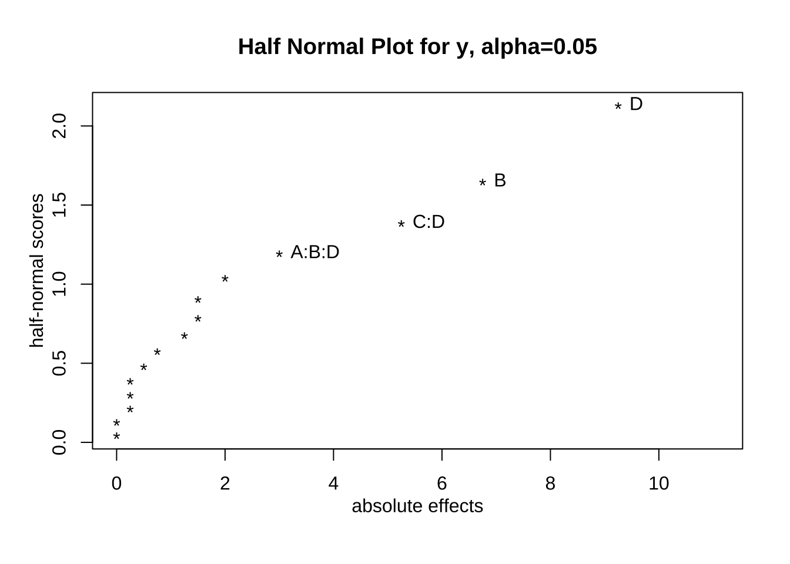

제 2 장 반복이 없는 \(2^4\) 요인배치법
먼저 반복이 없는 \(2^4\) 요인배치법이 적용되는 교과서 예제 7.4 에 대하여 논의합니다.
2.1 처리조합 자료의 생성
X <- FrF2(nruns=16, nfactors=4, randomize = FALSE)## creating full factorial with 16 runs ...X## A B C D
## 1 -1 -1 -1 -1
## 2 1 -1 -1 -1
## 3 -1 1 -1 -1
## 4 1 1 -1 -1
## 5 -1 -1 1 -1
## 6 1 -1 1 -1
## 7 -1 1 1 -1
## 8 1 1 1 -1
## 9 -1 -1 -1 1
## 10 1 -1 -1 1
## 11 -1 1 -1 1
## 12 1 1 -1 1
## 13 -1 -1 1 1
## 14 1 -1 1 1
## 15 -1 1 1 1
## 16 1 1 1 1
## class=design, type= full factorialy<- c(-1, 0, 9, 4, 5, 3, 11, 8,-1, -9, 1, 5, -9, -13, -5, -4)
df2 <- cbind(X,y)
df2 %>% kbl() %>% kable_paper("hover", full_width = F)| A | B | C | D | y |
|---|---|---|---|---|
| -1 | -1 | -1 | -1 | -1 |
| 1 | -1 | -1 | -1 | 0 |
| -1 | 1 | -1 | -1 | 9 |
| 1 | 1 | -1 | -1 | 4 |
| -1 | -1 | 1 | -1 | 5 |
| 1 | -1 | 1 | -1 | 3 |
| -1 | 1 | 1 | -1 | 11 |
| 1 | 1 | 1 | -1 | 8 |
| -1 | -1 | -1 | 1 | -1 |
| 1 | -1 | -1 | 1 | -9 |
| -1 | 1 | -1 | 1 | 1 |
| 1 | 1 | -1 | 1 | 5 |
| -1 | -1 | 1 | 1 | -9 |
| 1 | -1 | 1 | 1 | -13 |
| -1 | 1 | 1 | 1 | -5 |
| 1 | 1 | 1 | 1 | -4 |
2.2 처리효과의 계산
yates(df2$y, c("A", "B", "C", "D"))## A B AB C AC BC ABC D AD BD ABD CD ACD
## -2.00 6.75 1.25 -1.50 0.00 -0.75 -0.25 -9.25 0.25 0.50 3.00 -5.25 0.25
## BCD ABCD
## 0.00 -1.50
## attr(,"mean")
##
## 0.252.2.1 포화모형의 적합
이제 포화모형인 회귀식을 적합시키자.
fm2 <- lm (y~ A*B*C*D, data=df2)
summary(fm2)##
## Call:
## lm.default(formula = y ~ A * B * C * D, data = df2)
##
## Residuals:
## ALL 16 residuals are 0: no residual degrees of freedom!
##
## Coefficients:
## Estimate Std. Error t value Pr(>|t|)
## (Intercept) 2.50e-01 NA NA NA
## A1 -1.00e+00 NA NA NA
## B1 3.37e+00 NA NA NA
## C1 -7.50e-01 NA NA NA
## D1 -4.62e+00 NA NA NA
## A1:B1 6.25e-01 NA NA NA
## A1:C1 -9.37e-17 NA NA NA
## B1:C1 -3.75e-01 NA NA NA
## A1:D1 1.25e-01 NA NA NA
## B1:D1 2.50e-01 NA NA NA
## C1:D1 -2.62e+00 NA NA NA
## A1:B1:C1 -1.25e-01 NA NA NA
## A1:B1:D1 1.50e+00 NA NA NA
## A1:C1:D1 1.25e-01 NA NA NA
## B1:C1:D1 -3.89e-16 NA NA NA
## A1:B1:C1:D1 -7.50e-01 NA NA NA
##
## Residual standard error: NaN on 0 degrees of freedom
## Multiple R-squared: 1, Adjusted R-squared: NaN
## F-statistic: NaN on 15 and 0 DF, p-value: NAcoef(fm2)[-1]*2## A1 B1 C1 D1 A1:B1 A1:C1
## -2.000e+00 6.750e+00 -1.500e+00 -9.250e+00 1.250e+00 -1.874e-16
## B1:C1 A1:D1 B1:D1 C1:D1 A1:B1:C1 A1:B1:D1
## -7.500e-01 2.500e-01 5.000e-01 -5.250e+00 -2.500e-01 3.000e+00
## A1:C1:D1 B1:C1:D1 A1:B1:C1:D1
## 2.500e-01 -7.772e-16 -1.500e+00anova(fm2)## Warning in anova.lm(fm2): ANOVA F-tests on an essentially perfect fit are
## unreliable## Analysis of Variance Table
##
## Response: y
## Df Sum Sq Mean Sq F value Pr(>F)
## A 1 16 16
## B 1 182 182
## C 1 9 9
## D 1 342 342
## A:B 1 6 6
## A:C 1 0 0
## B:C 1 2 2
## A:D 1 0 0
## B:D 1 1 1
## C:D 1 110 110
## A:B:C 1 0 0
## A:B:D 1 36 36
## A:C:D 1 0 0
## B:C:D 1 0 0
## A:B:C:D 1 9 9
## Residuals 0 02.2.2 3차 이상의 상호적용을 풀링
이제 3차 이상의 상호적용을 풀링한 모형을 적합시키자.
fm21 <- lm (y~ A + B + C+ D+ A*B + A*C + A*D + B*C + B*D + C*D, data=df2)
summary(fm21)##
## Call:
## lm.default(formula = y ~ A + B + C + D + A * B + A * C + A *
## D + B * C + B * D + C * D, data = df2)
##
## Residuals:
## 1 2 3 4 5 6 7 8 9 10 11 12 13
## -2.25 2.25 2.00 -2.00 -0.75 0.75 1.00 -1.00 2.50 -2.50 -2.25 2.25 0.50
## 14 15 16
## -0.50 -0.75 0.75
##
## Coefficients:
## Estimate Std. Error t value Pr(>|t|)
## (Intercept) 2.50e-01 7.54e-01 0.33 0.7537
## A1 -1.00e+00 7.54e-01 -1.33 0.2422
## B1 3.37e+00 7.54e-01 4.48 0.0065 **
## C1 -7.50e-01 7.54e-01 -0.99 0.3656
## D1 -4.62e+00 7.54e-01 -6.13 0.0017 **
## A1:B1 6.25e-01 7.54e-01 0.83 0.4450
## A1:C1 -2.05e-16 7.54e-01 0.00 1.0000
## A1:D1 1.25e-01 7.54e-01 0.17 0.8748
## B1:C1 -3.75e-01 7.54e-01 -0.50 0.6401
## B1:D1 2.50e-01 7.54e-01 0.33 0.7537
## C1:D1 -2.62e+00 7.54e-01 -3.48 0.0176 *
## ---
## Signif. codes: 0 '***' 0.001 '**' 0.01 '*' 0.05 '.' 0.1 ' ' 1
##
## Residual standard error: 3.02 on 5 degrees of freedom
## Multiple R-squared: 0.936, Adjusted R-squared: 0.809
## F-statistic: 7.36 on 10 and 5 DF, p-value: 0.0199anova(fm21)## Analysis of Variance Table
##
## Response: y
## Df Sum Sq Mean Sq F value Pr(>F)
## A 1 16 16 1.76 0.2422
## B 1 182 182 20.03 0.0065 **
## C 1 9 9 0.99 0.3656
## D 1 342 342 37.61 0.0017 **
## A:B 1 6 6 0.69 0.4450
## A:C 1 0 0 0.00 1.0000
## A:D 1 0 0 0.03 0.8748
## B:C 1 2 2 0.25 0.6401
## B:D 1 1 1 0.11 0.7537
## C:D 1 110 110 12.12 0.0176 *
## Residuals 5 45 9
## ---
## Signif. codes: 0 '***' 0.001 '**' 0.01 '*' 0.05 '.' 0.1 ' ' 12.3 핵심 요인효과의 선별
DanielPlot(fm2, half=TRUE)
fm22 <- lm (y~ A+B+C+D+ C*D, data=df2)
summary(fm22)##
## Call:
## lm.default(formula = y ~ A + B + C + D + C * D, data = df2)
##
## Residuals:
## Min 1Q Median 3Q Max
## -3.62 -1.44 0.25 1.38 3.62
##
## Coefficients:
## Estimate Std. Error t value Pr(>|t|)
## (Intercept) 0.250 0.588 0.43 0.67953
## A1 -1.000 0.588 -1.70 0.11963
## B1 3.375 0.588 5.74 0.00019 ***
## C1 -0.750 0.588 -1.28 0.23069
## D1 -4.625 0.588 -7.87 1.4e-05 ***
## C1:D1 -2.625 0.588 -4.47 0.00120 **
## ---
## Signif. codes: 0 '***' 0.001 '**' 0.01 '*' 0.05 '.' 0.1 ' ' 1
##
## Residual standard error: 2.35 on 10 degrees of freedom
## Multiple R-squared: 0.923, Adjusted R-squared: 0.884
## F-statistic: 23.9 on 5 and 10 DF, p-value: 2.92e-05anova(fm22)## Analysis of Variance Table
##
## Response: y
## Df Sum Sq Mean Sq F value Pr(>F)
## A 1 16 16 2.90 0.11963
## B 1 182 182 32.99 0.00019 ***
## C 1 9 9 1.63 0.23069
## D 1 342 342 61.95 1.4e-05 ***
## C:D 1 110 110 19.95 0.00120 **
## Residuals 10 55 6
## ---
## Signif. codes: 0 '***' 0.001 '**' 0.01 '*' 0.05 '.' 0.1 ' ' 1